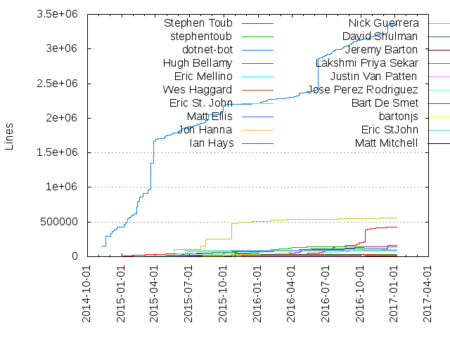

Authors
| Author | Commits (%) | + lines | - lines | First commit | Last commit | Age | Active days | # by commits |
|---|
| Stephen Toub | 4232 (24.81%) | 422658 | 185361 | 2014-11-13 | 2017-01-07 | 786 days, 4:25:07 | 647 | 1 |
| stephentoub | 842 (4.94%) | 139021 | 113541 | 2014-11-12 | 2016-05-28 | 563 days, 3:56:06 | 261 | 2 |
| dotnet-bot | 592 (3.47%) | 3365298 | 528479 | 2014-11-08 | 2017-01-06 | 790 days, 1:19:34 | 303 | 3 |
| Hugh Bellamy | 427 (2.50%) | 146881 | 321255 | 2015-11-10 | 2016-12-23 | 408 days, 18:57:34 | 144 | 4 |
| Eric Mellino | 425 (2.49%) | 85065 | 35540 | 2014-11-11 | 2017-01-07 | 787 days, 21:21:50 | 208 | 5 |
| Wes Haggard | 416 (2.44%) | 14414 | 65914 | 2014-11-21 | 2016-12-09 | 748 days, 17:22:31 | 193 | 6 |
| Eric St. John | 397 (2.33%) | 553696 | 143794 | 2015-03-24 | 2016-12-14 | 631 days, 6:51:09 | 190 | 7 |
| Matt Ellis | 390 (2.29%) | 29493 | 7461 | 2014-11-12 | 2016-12-15 | 764 days, 12:39:22 | 193 | 8 |
| Jon Hanna | 380 (2.23%) | 104964 | 204915 | 2015-07-09 | 2017-01-06 | 546 days, 10:49:46 | 154 | 9 |
| Ian Hays | 333 (1.95%) | 157647 | 215162 | 2015-07-01 | 2017-01-06 | 554 days, 22:24:30 | 164 | 10 |
| Nick Guerrera | 306 (1.79%) | 84729 | 40361 | 2014-11-11 | 2016-10-07 | 695 days, 21:06:27 | 120 | 11 |
| David Shulman | 299 (1.75%) | 30720 | 9375 | 2015-04-30 | 2016-12-01 | 581 days, 3:50:03 | 166 | 12 |
| Jeremy Barton | 247 (1.45%) | 11613 | 12908 | 2015-01-29 | 2016-11-11 | 651 days, 20:10:33 | 151 | 13 |
| Lakshmi Priya Sekar | 245 (1.44%) | 39076 | 16457 | 2014-12-06 | 2017-01-04 | 759 days, 22:38:38 | 153 | 14 |
| Justin Van Patten | 240 (1.41%) | 18079 | 13363 | 2014-12-19 | 2017-01-07 | 749 days, 8:04:46 | 123 | 15 |
| Jose Perez Rodriguez | 239 (1.40%) | 96097 | 38728 | 2015-12-02 | 2016-12-09 | 372 days, 21:15:54 | 120 | 16 |
| Bart De Smet | 237 (1.39%) | 39434 | 18503 | 2015-09-14 | 2016-12-08 | 450 days, 20:45:46 | 63 | 17 |
| bartonjs | 229 (1.34%) | 45078 | 19000 | 2015-05-21 | 2016-05-21 | 365 days, 8:58:33 | 113 | 18 |
| Eric StJohn | 216 (1.27%) | 94036 | 81515 | 2014-12-23 | 2016-12-14 | 722 days, 19:57:02 | 133 | 19 |
| Matt Mitchell | 200 (1.17%) | 3434 | 2625 | 2014-12-13 | 2016-12-09 | 726 days, 23:03:53 | 84 | 20 |
These didn't make it to the top: VSadov, Eric Eilebrecht, Krzysztof Wicher, Eric Erhardt, Tarek Mahmoud Sayed, Jeremy Kuhne, Lakshmi Priya, Pat Gavlin, Khoa Dang, James Ko, Shin Mao, Saurabh Singh, Pallavi Taneja, Matt Cohn, sepidehMS, Atsushi Kanamori, Cory Rivera, Christopher Costa, Cristian Pop, Jonathan Miller, Joel Hendrix, Andrew Arnott, Stephen A. Imhoff, Krzysztof Cwalina, Matt Galbraith, Davis Goodin, Tomas Matousek, Jan Kotas, Tomáš Matoušek, Karthik Rajasekaran, Alex Ghiondea, chcosta, Steve Harter, Taylor Southwick, Maxwe11, Charles Lowell, Vance Morrison, Immo Landwerth, Alexander Köplinger, Santiago Fernandez Madero, Mariana Rios Flores, Dan Moseley, Josh Free, Hemanth Kapila, Deepak Shankargouda, Sepideh Khoshnood, Dmitry Turin, Alex Perovich, Sedar Gokbulut, Gaurav Khanna, Shmueli Englard, Bruce Bowyer-Smyth, Karel Zikmund, AlexGhiondea, Venkatraman Mahalingam, Peter Marcu, Bart J.F. De Smet, Koundinya Veluri, Vladimir Sadov, Geoff Kizer, Vijay Kota, Hannah Zhang, dotnet bot, danmosemsft, Rajan Singh, Rahul Kumar, David Kean, Clockwork-Muse, Nate Slottow, Alexander Radchenko, vsadov, Tijoy Tom Kalathiparambil, SGuy Ge, Rama Krishnan Raghupathy, Petr Onderka, Nate Amundson, Kamil Rytarowski, Julien Couvreur, Sridhar Periyasamy, Shruti Garg, Jared Parsons, Ioana Crant, Sam Harwell, Matt Johnson, MarkPflug, Tarekm Mahmoud Sayed, Patrick McDonald, Amy Qiu, kkurni, Hyeongseok Oh, Ying Peng, Guillermo Rangel, David Fowler, Rama krishnan Raghupathy, Peter Jas, David Mason, Axel Heer, tijoytom, Thomas Stringer, Jan Henke, Alfredo Menendez Sancho, richamsft, ikopylov, qizhanMS, _aLfa_, Rich Lander, Mike McLaughlin, Kurniawan Kurniawan, Dmitry-Me, louluqun, huanwu, Vancem, Matt Connew, Marek Linka, Frank M, dagood, bjjones, Tanner Gooding, Richard Lander, John Chen (CLR), Geunsik Lim, Ben Bader, Ben Adams, shrutigarg, root, maririos, jasonwilliams200ok, chlowell, axelheer, Prajwal A N, Peter, Parker Shelton, Marc Würth, Jonghyun Park, Jim Carley, Hanjoung Lee, Andrew Au, Zlatko Knezevic, Sung-Jae Lee, Stephen Bonikowsky, Shaun Wilde, Richa Verma, Oren Novotny, Kevin Jones, Jostein Kjønigsen, John Bottenberg, Huangli Wu, Evgeny Pavlov, Eric White, Denis Istomin, Chad Nedzlek, scorpion, rozm, nietras, nguerrera, alperovi, William Godbe, SedarG, Ron Cain, Rafid K. Abdullah, Pavel Labovich, Page-Not-Found, Omari Omarov, Manu, Kwang Yul Seo, John Chen, Jiyoung Yun, Faizur Rahman, Brian Robbins, Brian O'Neill, Bernie Schoch, Bar Arnon, Alexander Kozlenko, vitek-karas, sjsujin.kim, krk, chunseok lee, Viacheslav Ivanov, Ufuk Hacıoğulları, Tarek mahmoud Sayed, Stephen Cleary, SepidehMS, Rainer Sigwald, Nadia, John Cunningham, Joe Tremblay, Jan Vorlicek, Geoffrey Huntley, Gaurav Khanna (CLR), Dmitry Kakurin, Dmitri Botcharnikov, Daniel Plaisted, Cory Nelson, Charlie Root, Andrey Akinshin, Andrew Stanton-Nurse, Alexandr Nikitin, Alexander Vostres, Aleksey Tsingauz, Aditya Mandaleeka, naamunds, leppie, lajones, kapilash, jbe2277, geoffkizer, geleems, ahsonkhan, Yi Zhang, Vitek Karas, Trent Raymond, Toni Petrina, SunnyWar, Steve Desmond, Qi Zhang, ProgramFOX, Petermarcu, Patrik Svensson, Nikita Nuka, Nate McMaster, Mircea Trofin, Michal Strehovský, Matthew Parkinson, Martin Scholz, Marek Safar, Marcin Juraszek, Maksym Rozborskyi, Luqun Lou, Lee Coward, Kristian Hellang, Kasey Uhlenhuth, Jon Miller, Jeff Handley, Jason Pang, Hyung-Kyu Choi, Gregg Miskelly, Giorgi Dalakishvili, Gene Lee, Eldar Dordzhiev, David Guyonvarch, Cesar Blum Silveira, Bryan P. Arant, Bret Ambrose, Ben Pye, Austin Wise, Anton Lapounov, Ankit Sinha, Andy Gocke, AlfredoMS, Alexander Speshilov, Alex Sorokoletov, AlekseyTs, Ale Contenti, Łukasz Domeradzki, yfakariya, wtgodbe, weshaggard, vecode, varocarbas, vagrant, unknown, tymlipari, theCrispy, tdupont750, sxmichael, stukselbax, steveharter, sjsujinkim, sichbo, sguyge, rcabr, nbilling, mzhaolz, moozzyk, mlacouture, mkborg, mirhagk, mihailik, martincostello, joshfree, jbuisson, jasonwoods-7, jashook, jarenduan, jacobcarpenter, huanwu@microsoft.com, ericstj, davkean, danmose, costahome, chunseoklee, briangru, bpschoch, andrewlock, andi9310, alphonsekurian, alkurian, alexghiondea, Zhenlan Wang, Yongseop Kim, Yi Zhang (CLR), Wade Wegner, Vlad Riscutia, Ujjwol Lamichhane, Tom Deseyn, Tijoy Tom, Steven Engelhardt, Simon Timms, Shay Rojansky, Shawn Hargreaves, Shahriar Gholami, Sean Gillespie, SaeHie Park, Russell Gray, Robert Sęk, Robert Matusewicz, Rahul Kotecha, R. Fontenot, Pierre Arnaud, Peter Monks, Peter Blazejewicz, Paolo G. Giarrusso, P. Jass, OmariO, Omar Tawfik, Odyth, Noah Falk, MyungJoo Ham, Mort Yao, Mike Rousos, Mike Popoloski, Miguel de Icaza, Michael Aird, Matthew Whilden, Martin Lapierre, MarkusSintonen, Mark Junker, Mark Hurd, Marek, Marc Gravell, Maira Wenzel, Lukasz Wolanin, Llewellyn Pritchard, KrzysztofCwalina, Kirill Osenkov, Kevin Pilch-Bisson, Kevin David, Kamran Ayub, Julien, Jostein Kjønigsen, Joseph Woodward, Joseph Lennox, Jorgen Thelin, Jonathon Rossi, John Bentley, Jeff Foster, Jb Evain, Jarret Shook, James-Ko, Jake Petroules, Ilya Biryukov, Guclu Ozturk, Grzegorz Rożniecki, Gregory Bell, Govind Sahai, Govert van Drimmelen, Gopal Adhikari, Gert Driesen, Gerjan, Gerald Scott Freeman, Geoffrey Kizer, Gareth Thomas, Gabriel, Fitzchak Yitzchaki, Erwin Janssen, Erik Schierboom, Eli Arbel, Edward Kim, Dylan Borg, Dominic Catherin, DmitryGaravsky, Dmitry Vakylenko, Dmitri-Botcharnikov, Dimitar Dimitrov, David Zucker, David Sherret, Daniel Trebbien, Daniel Paoliello, Craig Johnson, Christian Weiss, Chris S, Chris Rummel, Chris R, Chris Bohm, Chris, Chickenzilla, Chamila Chulatunga, Caio Cesar Saldanha Maia Orejuela Kinelski, Bryan Arant, BrennanConroy, Brandon Everett, Blanche, Bill Wert, Benjamin Hodgson, Ben Gribaudo, Barry Dorrans, AtsushiKan, Ashley Mannix, Arkady Shapkin, Anubhav Saini, Anthony van der Hoorn, Andy Ayers, Andrey Kurdyumov, Andrew Schwartzmeyer, Andrew Peters, Andrew, Andrea Martinelli, Alicia Li, Alfred White, Alexandre Mutel, Alex Recker, Alex, Alcaro, Ahson Ahmed Khan, Adam Ralph, Abdurrahman Köken
Only top 20 authors shown
Only top 20 authors shown
| Month | Author | Commits (%) | Next top 5 | Number of authors |
|---|
| 2017-01 | Stephen Toub | 29 (26.85% of 108) | dotnet-bot, sepidehMS, Justin Van Patten, Ian Hays, Geoff Kizer | 37 |
| 2016-12 | Stephen Toub | 106 (22.75% of 466) | Jon Hanna, dotnet-bot, Lakshmi Priya Sekar, Jan Kotas, Bart De Smet | 75 |
| 2016-11 | Stephen Toub | 322 (28.65% of 1124) | Jon Hanna, Bart De Smet, dotnet-bot, Santiago Fernandez Madero, Eric St. John | 85 |
| 2016-10 | Stephen Toub | 387 (35.47% of 1091) | Eric St. John, Bart De Smet, Jose Perez Rodriguez, Ian Hays, Wes Haggard | 84 |
| 2016-09 | Stephen Toub | 266 (30.37% of 876) | Jose Perez Rodriguez, Hugh Bellamy, dotnet-bot, Bart De Smet, Eric Mellino | 72 |
| 2016-08 | Stephen Toub | 167 (24.10% of 693) | dotnet-bot, Jose Perez Rodriguez, Hugh Bellamy, Wes Haggard, Jeremy Barton | 83 |
| 2016-07 | Stephen Toub | 215 (32.58% of 660) | dotnet-bot, Krzysztof Wicher, sepidehMS, Jose Perez Rodriguez, James Ko | 74 |
| 2016-06 | Stephen Toub | 253 (34.33% of 737) | dotnet-bot, Shin Mao, sepidehMS, Wes Haggard, Eric St. John | 65 |
| 2016-05 | Stephen Toub | 129 (15.71% of 821) | Matt Ellis, stephentoub, Hugh Bellamy, Eric St. John, David Shulman | 79 |
| 2016-04 | Stephen Toub | 186 (17.29% of 1076) | Hugh Bellamy, stephentoub, Eric Eilebrecht, Jon Hanna, Ian Hays | 79 |
| 2016-03 | Stephen Toub | 282 (24.82% of 1136) | stephentoub, Hugh Bellamy, Eric St. John, Jon Hanna, Cory Rivera | 82 |
| 2016-02 | Stephen Toub | 221 (24.58% of 899) | stephentoub, Hugh Bellamy, Saurabh Singh, Eric Eilebrecht, Cory Rivera | 71 |
| 2016-01 | Stephen Toub | 192 (21.82% of 880) | stephentoub, Wes Haggard, Eric Mellino, Ian Hays, Eric Erhardt | 81 |
| 2015-12 | Stephen Toub | 61 (13.47% of 453) | Wes Haggard, stephentoub, David Shulman, dotnet-bot, Matt Mitchell | 61 |
| 2015-11 | Stephen Toub | 106 (21.33% of 497) | stephentoub, David Shulman, Eric Mellino, Eric Erhardt, bartonjs | 64 |
| 2015-10 | Stephen Toub | 188 (20.30% of 926) | Pat Gavlin, Eric Erhardt, stephentoub, Bart De Smet, bartonjs | 75 |
| 2015-09 | Stephen Toub | 139 (20.81% of 668) | stephentoub, Nick Guerrera, Jon Hanna, Atsushi Kanamori, bartonjs | 62 |
| 2015-08 | Stephen Toub | 159 (25.48% of 624) | stephentoub, Nick Guerrera, Jon Hanna, Eric Mellino, Eric St. John | 59 |
| 2015-07 | Stephen Toub | 110 (26.57% of 414) | stephentoub, Nick Guerrera, bartonjs, David Shulman, Jeremy Kuhne | 52 |
| 2015-06 | Stephen Toub | 120 (28.50% of 421) | stephentoub, bartonjs, Nick Guerrera, Khoa Dang, Jeremy Barton | 50 |
| 2015-05 | Stephen Toub | 103 (31.89% of 323) | Matt Ellis, dotnet-bot, Jeremy Kuhne, Eric StJohn, Krzysztof Cwalina | 59 |
| 2015-04 | Stephen Toub | 137 (31.14% of 440) | Matt Cohn, Matt Ellis, Matt Mitchell, dotnet-bot, Krzysztof Wicher | 42 |
| 2015-03 | Stephen Toub | 100 (28.74% of 348) | Pallavi Taneja, Matt Ellis, Matt Mitchell, MarkPflug, Christopher Costa | 44 |
| 2015-02 | Stephen Toub | 114 (25.85% of 441) | Wes Haggard, Nick Guerrera, Matt Ellis, dotnet-bot, Nate Slottow | 51 |
| 2015-01 | Stephen Toub | 107 (24.21% of 442) | Justin Van Patten, Nick Guerrera, Wes Haggard, dotnet-bot, Matt Mitchell | 37 |
| 2014-12 | Wes Haggard | 31 (10.84% of 286) | Matt Cohn, Stephen Toub, Andrew Arnott, Lakshmi Priya, Eric Mellino | 39 |
| 2014-11 | Andrew Arnott | 36 (17.22% of 209) | Nick Guerrera, Patrick McDonald, Matt Cohn, richamsft, dotnet-bot | 47 |
| Year | Author | Commits (%) | Next top 5 | Number of authors |
|---|
| 2017 | Stephen Toub | 29 (26.85% of 108) | dotnet-bot, sepidehMS, Justin Van Patten, Ian Hays, Geoff Kizer | 37 |
| 2016 | Stephen Toub | 2726 (26.06% of 10459) | Hugh Bellamy, stephentoub, dotnet-bot, Eric St. John, Jon Hanna | 282 |
| 2015 | Stephen Toub | 1444 (24.08% of 5997) | stephentoub, Nick Guerrera, Matt Ellis, Wes Haggard, dotnet-bot | 222 |
| 2014 | Andrew Arnott | 54 (10.91% of 495) | Matt Cohn, Wes Haggard, Nick Guerrera, Stephen Toub, Lakshmi Priya | 67 |
| Domains | Total (%) |
|---|
| microsoft.com | 13424 (78.69%) |
|---|
| gmail.com | 1174 (6.88%) |
|---|
| users.noreply.github.com | 970 (5.69%) |
|---|
| hackcraft.net | 380 (2.23%) |
|---|
| justinvp.com | 240 (1.41%) |
|---|
| outlook.com | 223 (1.31%) |
|---|
| hotmail.com | 164 (0.96%) |
|---|
| samsung.com | 47 (0.28%) |
|---|
| yahoo.com | 35 (0.21%) |
|---|
| englard.net | 33 (0.19%) |
|---|